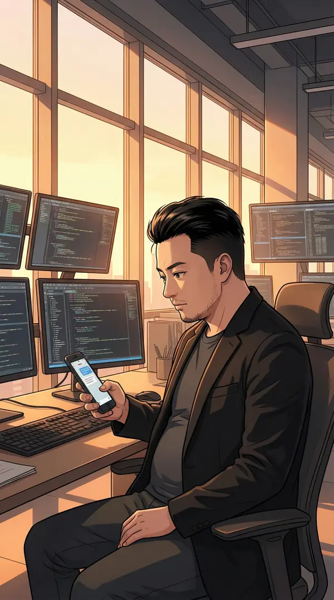
清晨六点。我已经在办公室坐了一整夜。
方总的短信像一颗定时炸弹躺在手机里——"明天下午有空吗？我想聊聊合作的事。"
不是明天。是今天。
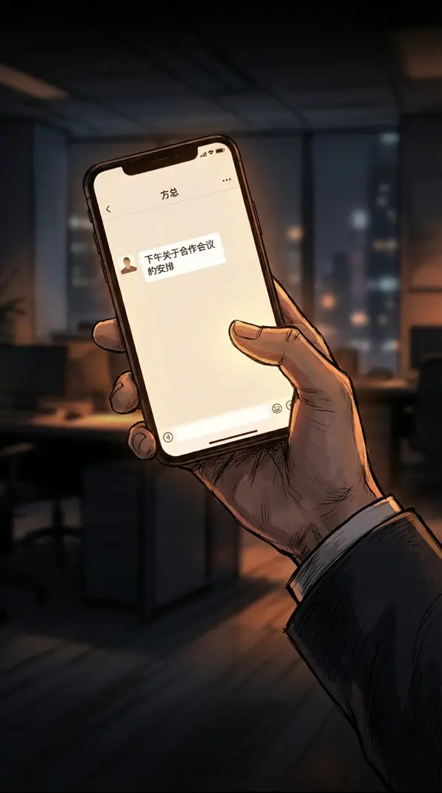
我盯着手机屏幕。方总发消息的时间是昨晚22:47——距离我发现他的SSH渗透，仅仅过了三小时。
巧合？我不信。
在创业这行，我学到的第一条规则就是：没有巧合，只有信息差。
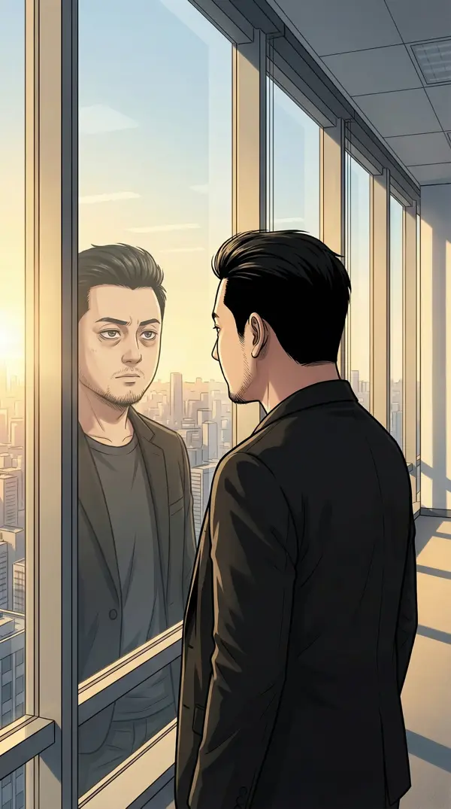
窗外，深圳的天际线在晨曦中渐渐亮起来。我靠在落地窗上，玻璃冰凉。
昨晚陆薇发来的最后一条消息还在脑海里回响——老周的账号异常比陆薇的早两个月。方总最先拿到的是系统架构图。
他不是在偷代码。他是在复制我们。
九点整，陆薇推门走进来。白衬衫，深蓝铅笔裙，银框眼镜——和每天一样。
但她的步伐比平时快了15%。我的超频感知捕捉到了这个细节——她有重要发现。
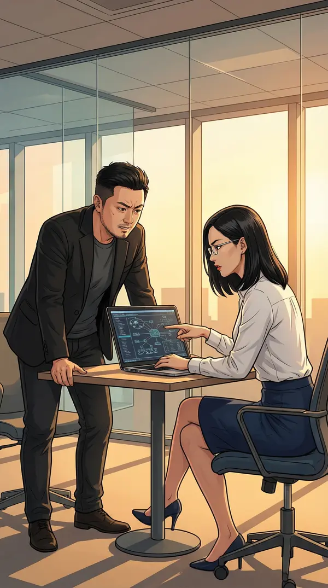
"昨晚查到凌晨四点。"她把笔记本电脑翻开，推到我面前。屏幕上是一张复杂的网络拓扑图。
"老周的账号被渗透后，攻击者不只偷了架构图。他们还在我们的训练集群里埋了一个监听节点——实时镜像我们的模型权重。"
我的手指不自觉地攥紧了。这意味着我们训练多久，方总就跟踪多久。我们的大模型，他有一份完整的副本。
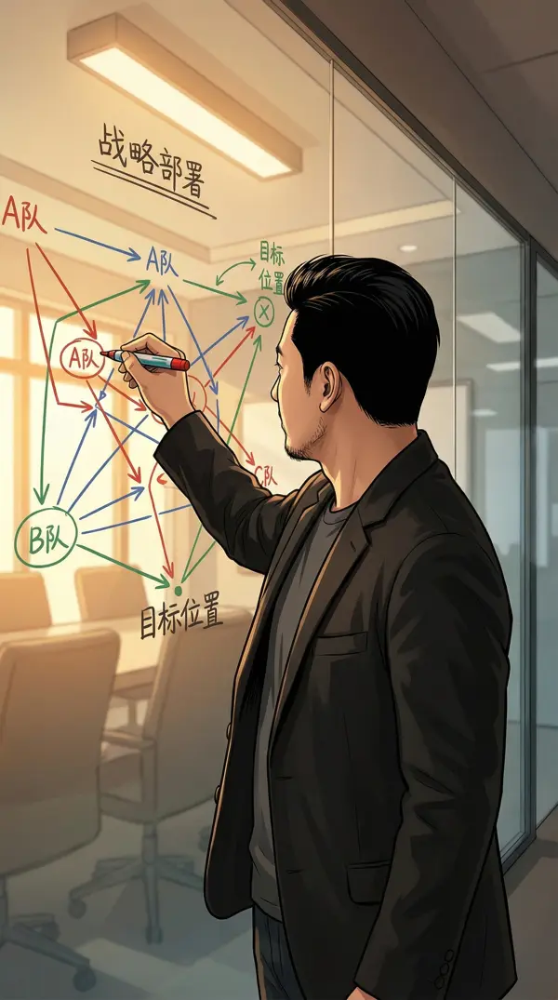
[决策-17] 方总下午要见我。现在我知道他偷了我们的全部技术。怎么去这个会？
A：带律师和证据，直接摊牌——告诉他我知道了一切，要求赔偿（正面硬刚）
B：假装不知道，赴约收集更多信息——看他想给我什么"合作提案"，反向套取情报（情报优先）
C：接受邀约但设下反制——带着超频感知去读他的每一个微表情，同时让陆薇在后方继续追查（攻守兼备）
我选了C。正面硬刚是最蠢的——他有法务团队，我有什么？超频感知。这场仗要用我擅长的方式打。
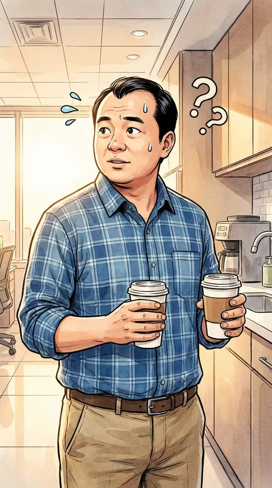
老周端着两杯咖啡走进来，一杯递给我，一杯递给陆薇。
"你俩一大早就开密会？"他看看我又看看陆薇，"要不要我回避？"
我接过咖啡："你留下。帮我挑一套能震住人的衣服。"
老周看了看我的卫衣和牛仔裤："你是要去打架还是去谈判？"
"差不多。"
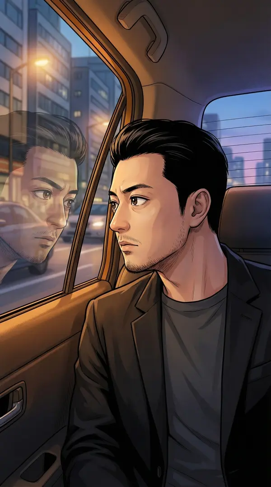
下午两点。出租车穿过深圳南山区的车流。
我换了那件黑色休闲西装，里面是深灰T恤。不算正式，但足够体面。陆薇说这样好——"太正式说明你在意，太随便说明你没重视。这个刚好。"
车窗外，高楼从两侧掠过。我在心里过了第三遍今天的计划。
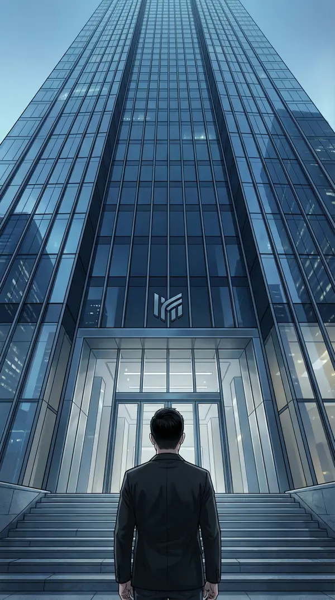
耀星科技的总部大楼。
三十二层的玻璃幕墙在阳光下折射出冷蓝色的光。门口的Logo是一颗五角星——耀星，耀眼的星。
我抬头看了一眼。这栋楼的租金够深源科技全员发半年工资。
但他用偷来的技术撑起这面光鲜的门面。
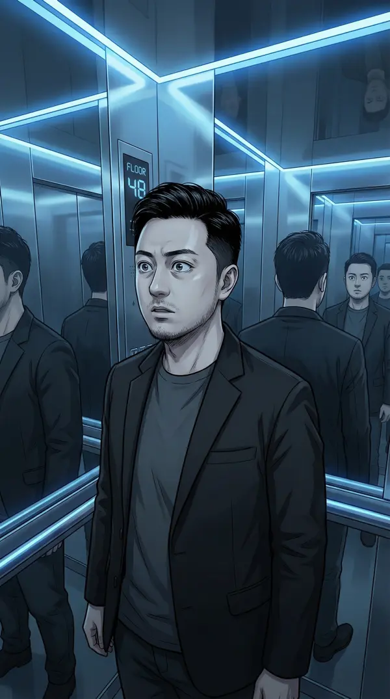
电梯里。镜面墙壁映出我的影子——不止一个，而是无数个，在镜面之间无限反射。
每一个影子都是一种可能的结局。
楼层数字跳动：18...24...30...32。
门开了。
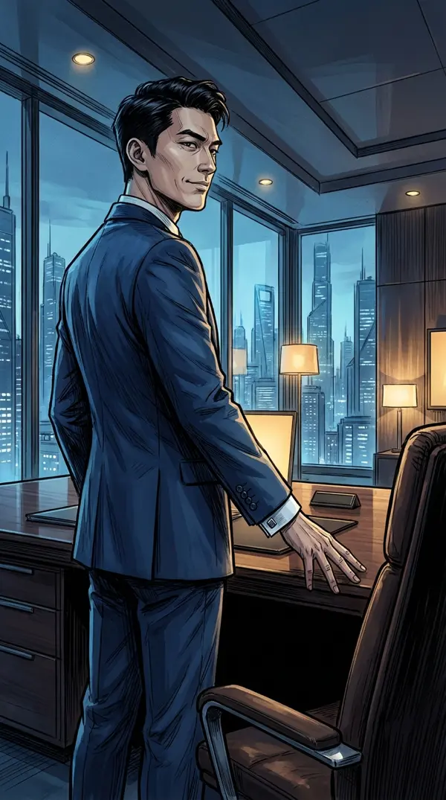
方总的办公室在三十二层的角落。整面落地窗，整个深圳南山尽收眼底。
他站在窗前等我。深蓝定制西装，银色袖扣，发型一丝不苟。标准的成功人士模板。
"朱总，久仰。请坐。"
声音不急不缓。掌控感很强。
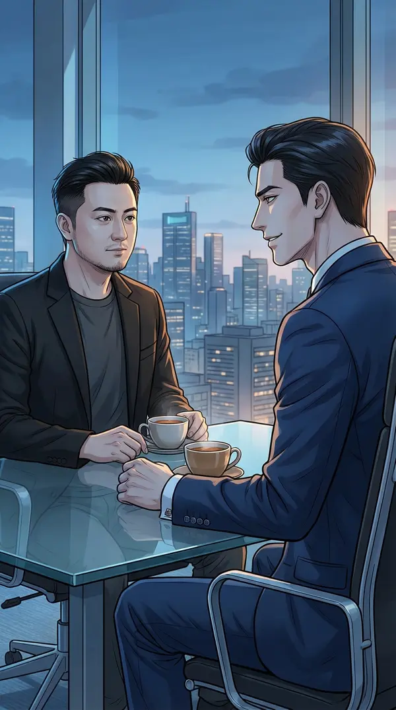
我们面对面坐下。玻璃桌面反射着窗外的天光。两杯茶，一份合同，和两个各怀鬼胎的人。
他笑着说："深源科技最近的大模型训练成果很亮眼，业内都在关注。"
我回了个微笑："耀星的融资速度更让人佩服。"
开场寒暄。两个人都在试探水温。
方总把一份文件滑到桌面中间。他的手指修长、干净，银色袖扣在灯光下闪了一下。
"这是我的提案。耀星和深源战略合作——我们出资源和渠道，你们出技术和团队。对半分。"
一份看起来很大方的合同。表面上。
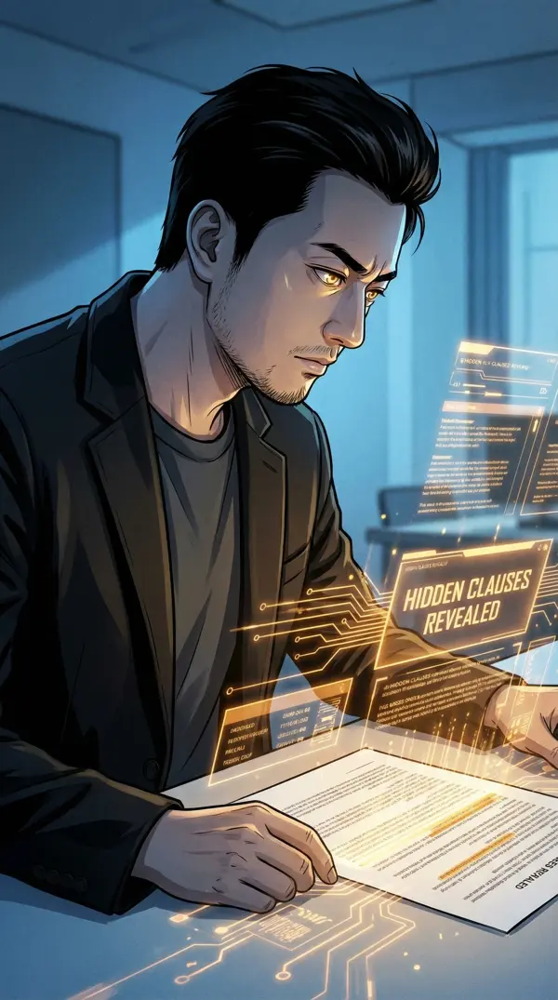
我低头看合同。超频感知悄然启动。
时间慢下来。合同上的文字变成了发光的数据流——第三条第七款里藏着一个"技术授权不可逆条款"；第八条的"竞业限制"实际上把我们锁死三年。
表面是合作。实际是吞并。
他想用一纸合同把深源科技变成耀星的技术附庸——而且合法合规，我连告都没法告。
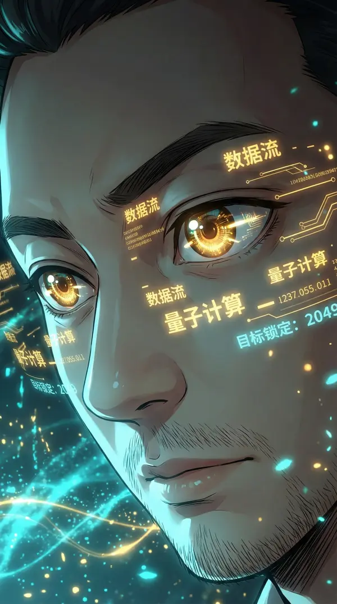
超频感知继续深入。我的瞳孔里映着金色的数据光流。
合同第十一条——"知识产权共享"——用了三层嵌套定义。翻译成人话就是：深源所有的专利、算法、模型权重，签约后全部归耀星共有。
他已经偷了我们的东西，现在他要让这个"偷"合法化。
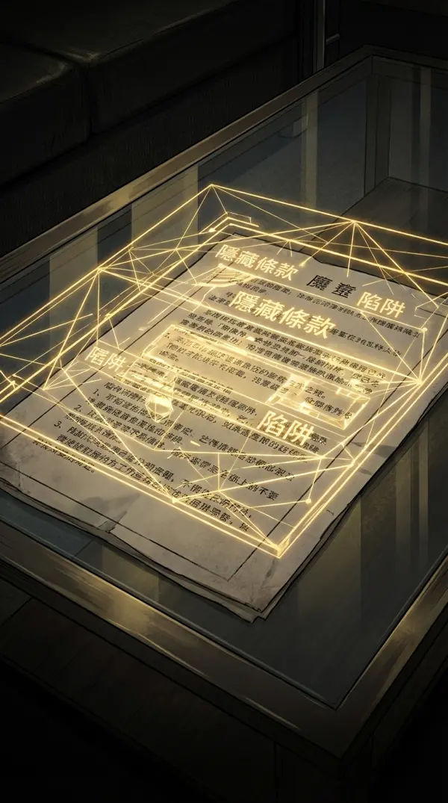
合同上的隐藏条款在我的超频视野里无所遁形。每一个陷阱都像一根金色的线，它们交织在一起，织成一张精密的网。
方总不是在谈合作。他在下一盘棋，而这份合同是他的将军。
但他不知道我能看到棋盘的全貌。
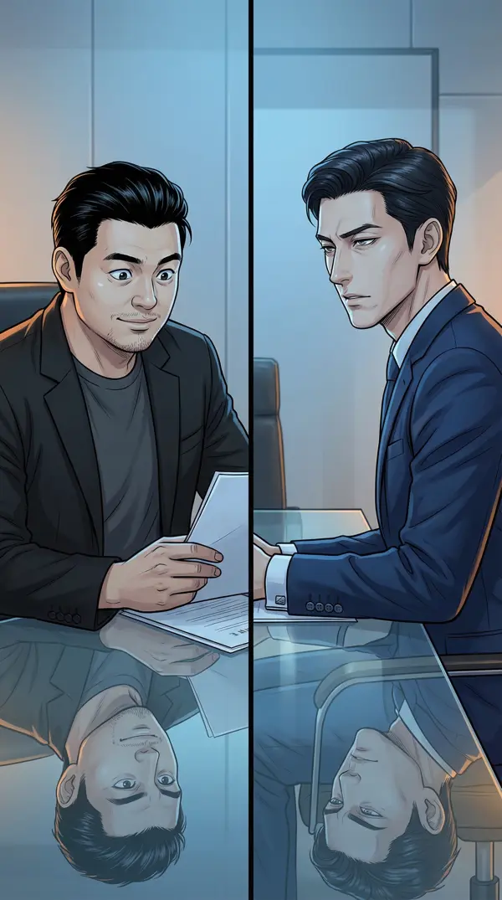
[决策-18] 我已经看穿了合同里所有的陷阱。怎么回应？
A：当场拆穿——逐条指出隐藏条款，让他知道我不是好骗的（震慑）
B：假装心动但要求修改——提出几个"小修改"，实际上是拆掉他的核心陷阱，看他怎么反应（试探底线）
C：先表示需要考虑，带合同回去——争取时间让陆薇配合分析，同时观察他后续动作（拖延+反侦察）
我选了B。直接拆穿会打草惊蛇，拖延又显得软弱。最好的反击是让他以为我还在他的棋盘上——但每一步都在拆他的棋子。
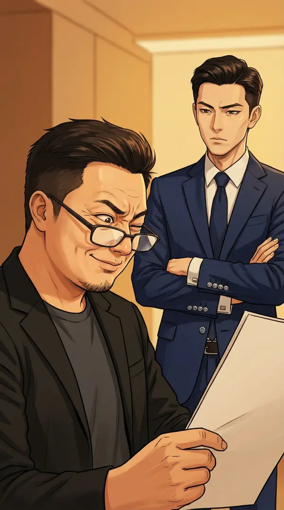
我从口袋里掏出一副老花镜——那是老周的，出门前临时借的。
我慢条斯理地戴上，把合同举到眼前，眯着眼一行一行地看。故意的。
方总的嘴角微微抽动了一下。他大概没见过三十二岁的CEO戴老花镜。
"朱总的眼睛……"
"加班太多，用眼过度。"我头也不抬，"这个年纪就开始老花了，惭愧惭愧。"
我需要时间。哪怕多三十秒也好。
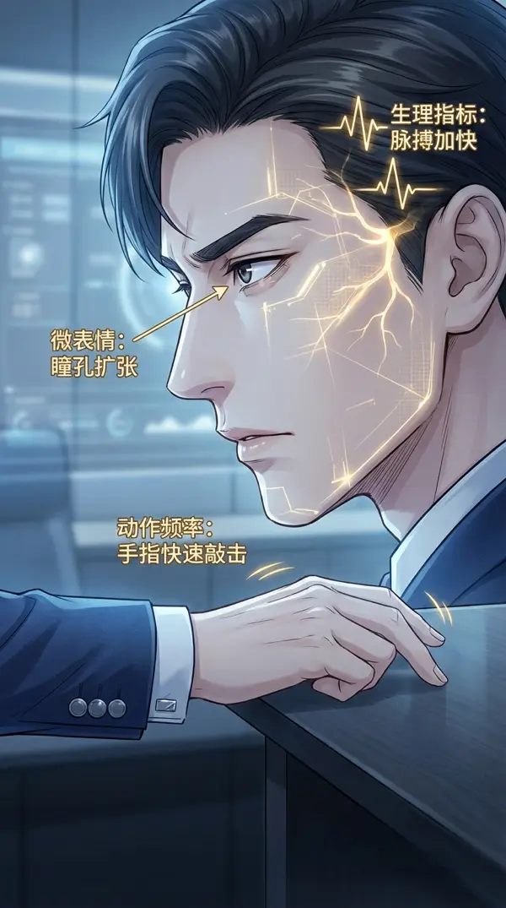
超频感知锁定方总。他的微表情在我的视野里被放大十倍。
瞳孔：略微扩大——他在关注我的反应。太阳穴：有一根细微的血管在跳动——心率偏高。手指：右手食指和中指在桌面下以每秒六次的频率轻敲。
每秒六次。
正常人手指敲击频率是每秒两到三次。六次——要么他在极度紧张，要么——
他的处理速度不正常。
我"不小心"碰了一下茶杯。杯子滑向桌边。
方总的手动了。
快得不可思议。在茶杯离开桌面的瞬间——0.15秒——他的右手已经接住了它。茶水一滴未洒。动作干净利落，像预判了轨迹。
然后他僵住了。意识到自己暴露了。
我们四目相对。空气凝固了。
他也有超频。
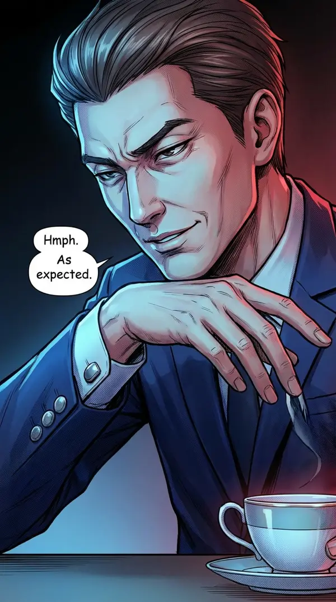
方总把茶杯轻轻放回桌上。他的表情变了——不再是商人的礼貌面具，而是一种更真实的东西。
"朱总……你也听到了吗？"
"听到什么？"
"世界变慢的声音。"
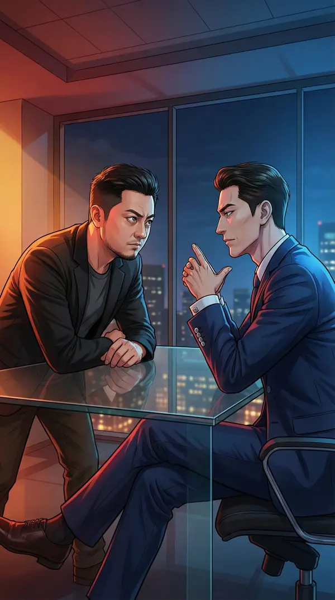
客套全部碎裂。两个CEO坐在同一张桌前，但谈的不再是合同。
"什么时候觉醒的？"我问。
"比你早两个月。"他靠在椅背上，手指不再敲桌面了。"三月份。实验室的一次GPU集群过载。电弧击中了服务器机架——我在旁边。"
GPU集群过载。电弧。和我一模一样。
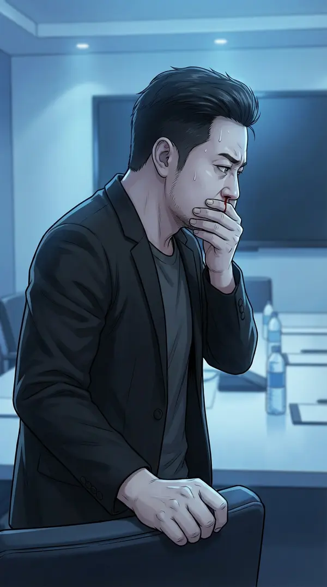
超频感知的代价在最坏的时刻降临了。
太阳穴像被钉子扎穿。右耳的高频蜂鸣声突然拉响。我感觉到鼻腔里那股熟悉的温热——鼻血来了。
我偏过头，假装看窗外的风景，用手背快速擦掉了鼻血。
但方总看到了。他的眼睛什么都没放过。
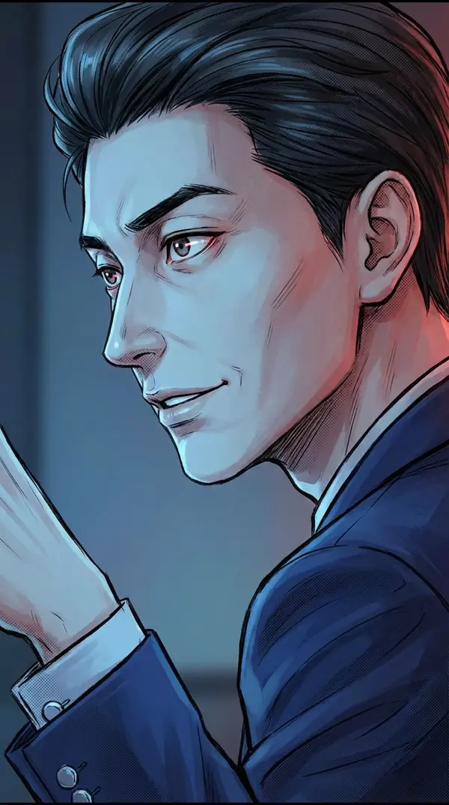
"偏头痛和鼻血。"方总平静地说。不是问句。
他从西装内袋里掏出一块手帕——白色的，叠得整整齐齐——递给我。
"我也有。用得越深，代价越重。对吧？"
那一刻我在他的眼睛里看到了一种复杂的东西：不是敌意，不是同情，是——同类相认。
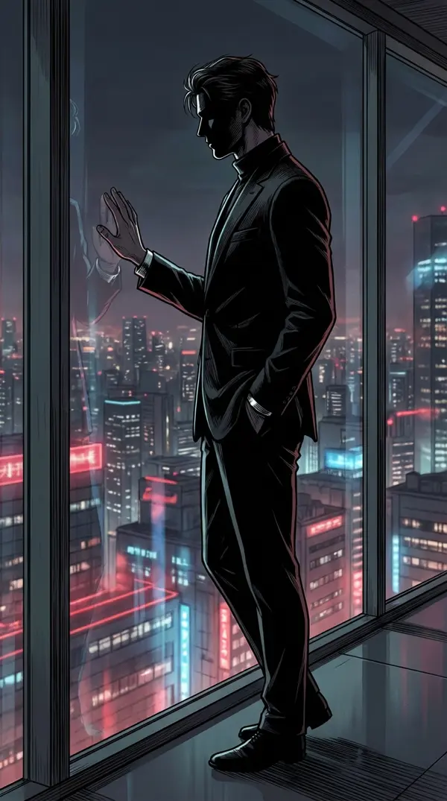
方总走到窗前。深圳的天际线在他身后延伸到天边。
"我调查过。不只你我。全国至少还有三个人——都是AI公司的核心技术人员，都在高强度GPU集群附近经历过电弧事故。"
他转过身来。窗外的光在他背后勾出一道锐利的轮廓。
"你不觉得这太巧了吗？四个AI公司的人，同样的事故，同样的觉醒。这不是巧合。这是设计。"
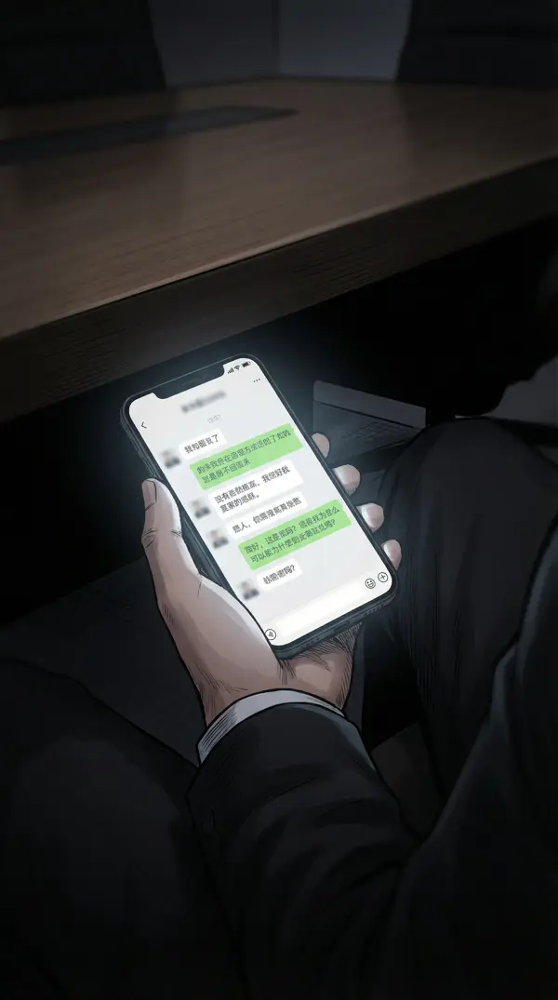
手机在桌下震动。我低头瞥了一眼——陆薇的消息。
"紧急：训练集群监听节点追溯到源IP。不是耀星的。是一个境外服务器。追踪发现同一个IP，在过去六个月里，同时渗透了四家AI公司——包括耀星。"
我的血冷了半度。
方总也是受害者。
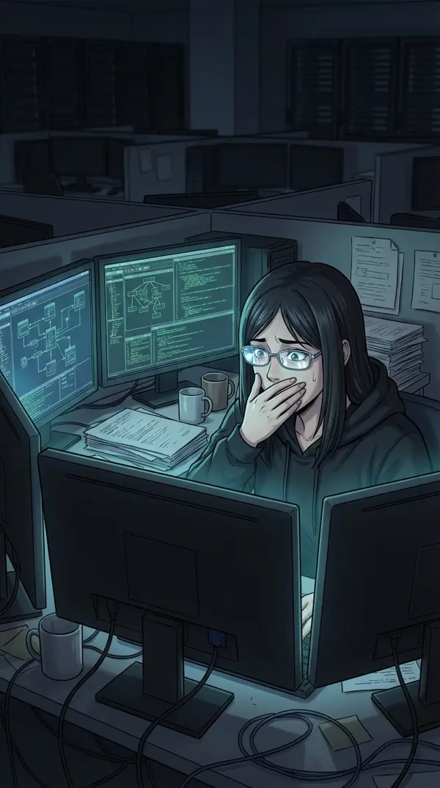
我脑海里的拼图在重组。
方总偷深源的技术——确实有。但在他之上，还有一个更大的手在操控。那个境外IP，同时渗透四家AI公司，同时"制造"了至少四个觉醒者。
有人在做实验。
我们——所有觉醒者——是实验品。
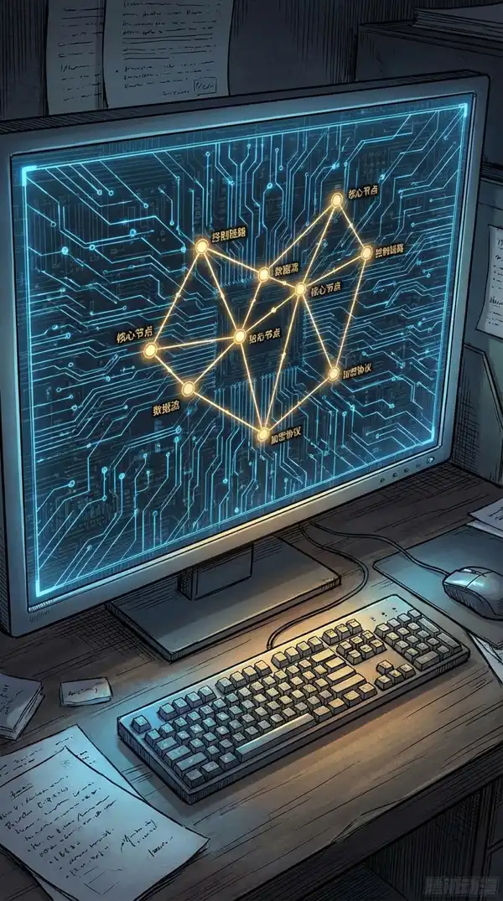
陆薇的第二条消息："更可怕的是——那个IP的渗透路径显示，它不只监控了你们的代码和模型。它还监控了你们的电力系统。四家公司的电弧事故发生时间，精确到毫秒级——都是被远程触发的。"
远程触发电弧。精确制造觉醒者。
这不是事故。这是一个项目。
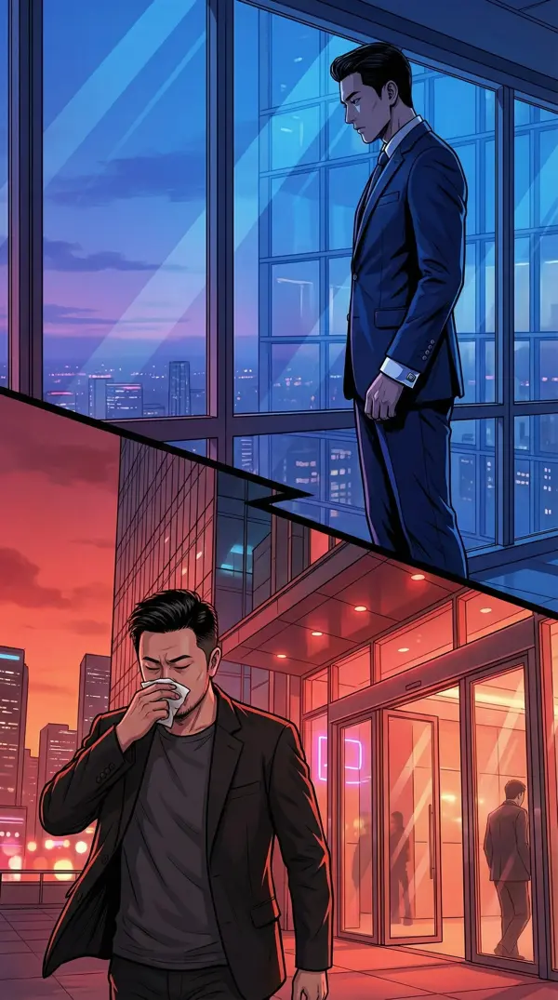
我从方总的大楼走出来。身后，他站在三十二层的落地窗前，一个模糊的深蓝色剪影。
我们没有签合同。但我们达成了一个默契——在找到那个"制造者"之前，我们不是敌人。
当然，方总偷技术的账，以后还是要算的。但那是以后的事。
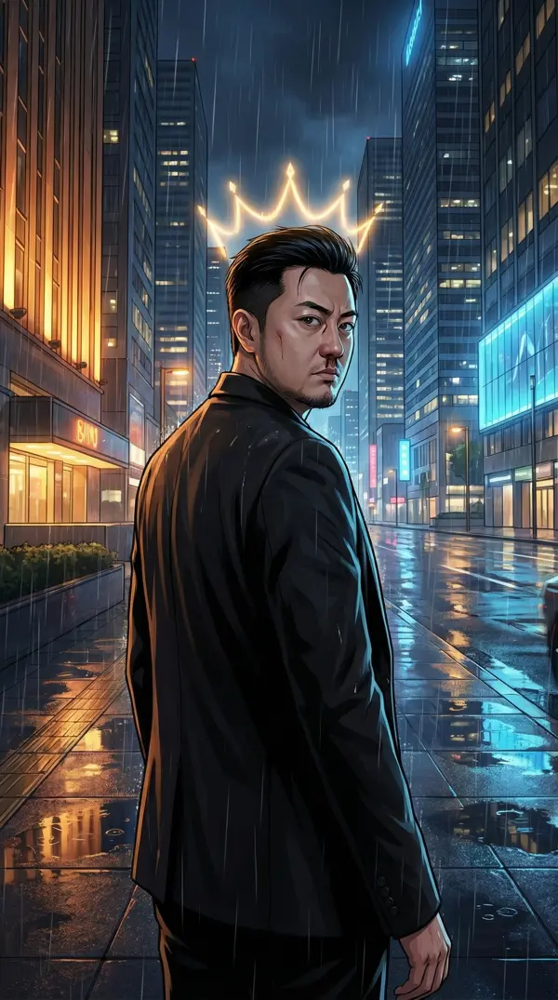
深圳的夜晚。雨后的街道上，霓虹灯在积水里碎成一千个颜色。
我独自走在路上。头还在隐隐作痛，鼻血的痕迹还在。但眼睛是亮的。
有人在制造超频觉醒者。至少四个。也许更多。
他们在做什么？为什么选AI公司？目的是什么？
而最让我不安的是方总临别时说的最后一句话——
"朱总，你有没有想过……我们的觉醒只是Lv.1和Lv.2。那个'制造者'，他自己会是什么等级？"